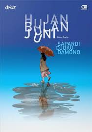
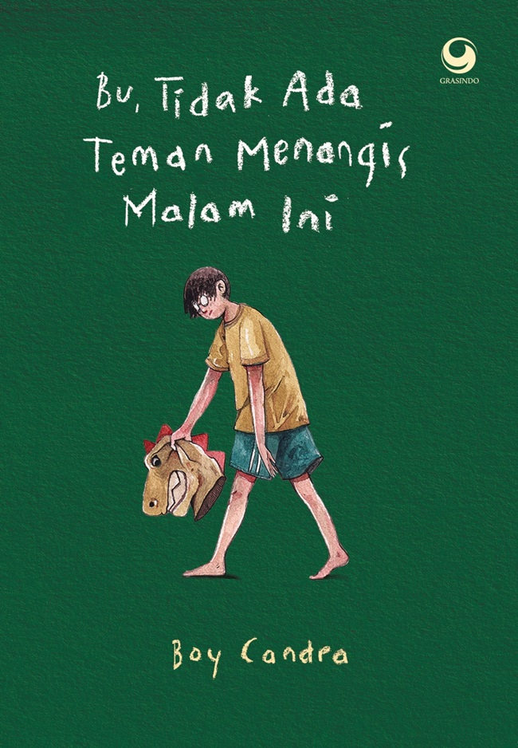

Hujan bulan juli
Rp.85.000
Novel Bulan Juli menggambarkan kisah tentang perasaan, kenangan, dan perubahan hidup yang terjadi dalam satu fase waktu yang bermakna.

Ayahku bukan pembohong
Rp.95.000
Ayahku Bukan Pembohong adalah novel tentang hubungan ayah dan anak yang penuh makna, di mana kisah-kisah sang ayah yang dianggap bohong ternyata mengandung pelajaran hidup tentang kejujuran, cinta, dan kebijaksanaan.

Bu,tidak ada teman menangis malam ini
Rp.149.000
“Bu, Tidak Ada Teman Menangis Malam Ini” adalah novel yang menggambarkan kesepian dan pergulatan batin seorang anak yang mencari penghiburan pada sosok ibu. Ceritanya menyentuh tema luka emosional, kerinduan, dan kebutuhan untuk dipahami.